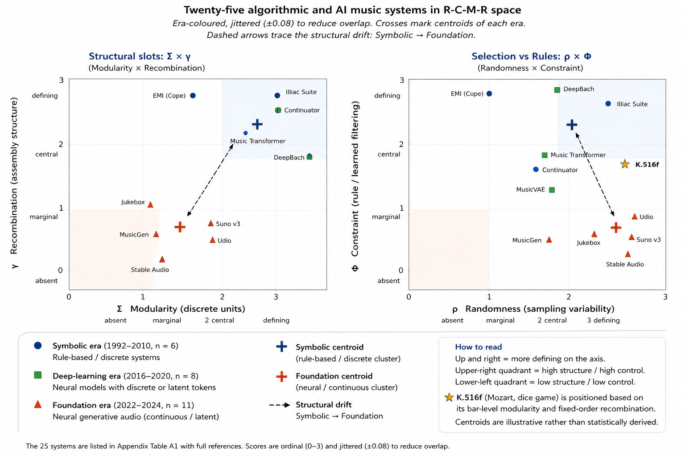
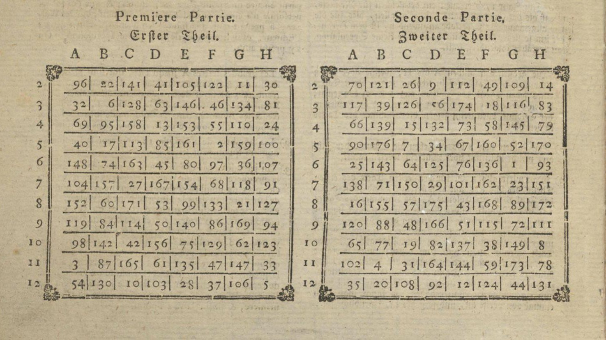

The framing of generative AI music as a technological rupture obscures a 250-year tradition of combinatorial composition with which it is continuous. This page is the computational companion to a manuscript in preparation (Park, 2026): it lets you hear a minuet produced by the same four-slot structure that Mozart's 1792 dice game and today's MusicGen share — just with different contents in each slot.
G = ⟨ Σ, P, Φ, γ ⟩
modular alphabet · probability · feasibility · composition operator
Audio sample
30-second realisation of K.516f under the historical two-dice (triangular) distribution, seed 42, rendered by the prototype's Fortepiano-modelled additive synthesiser. The voice models a 1792-era fortepiano with 12 inharmonic partials, two-stage decay envelope, hammer-attack noise transient, soundboard formant, and stereo image — historically appropriate for Mozart's keyboard.
Fig. 2 The four structural axes of the R-C-M-R framework. Any generative system is located by four orthogonal readings.
Twenty-five systems in R-C-M-R space

Fig. 3 Twenty-five algorithmic and AI music systems on two orthogonal R-C-M-R projections, era-coloured, with the structural drift Symbolic → Foundation marked.
The historical object — K.516f (1792)

Fig. 1 Table from the posthumously published Musikalisches Würfelspiel, attributed to Wolfgang Amadeus Mozart, K.516f / K. Anh. 294d (Simrock, Bonn 1792).
Specification entropy H46.842 bitsunder the historical triangular P
Citation
Park, E. J. (2026). The Dice Within the Machine: A Historical-Computational Reading of Musical Combinatorics from Mozart to Generative AI. Manuscript in preparation.
Park, E. J. (2026b). The Dice Within the Machine — K.516f Prototype (v1.1.0) [Software]. GitHub: rosyrosys/k516f-prototype.